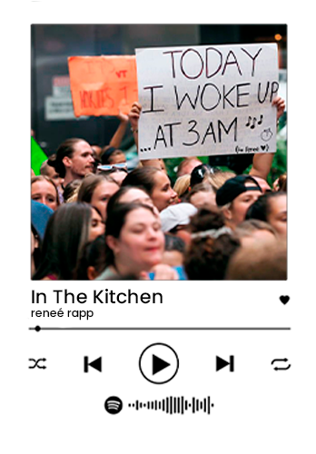
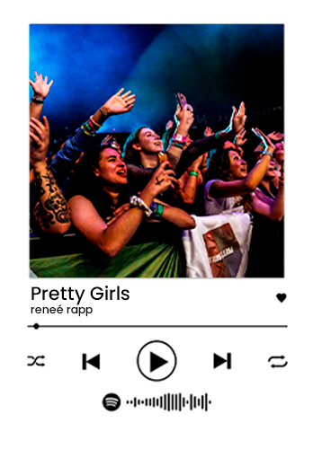
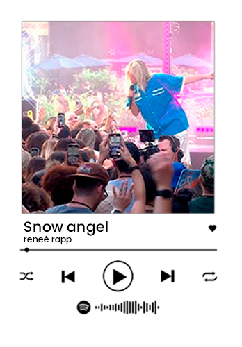
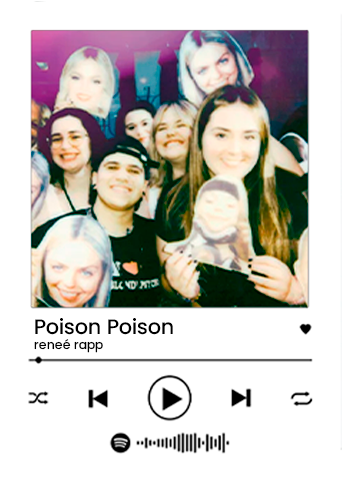

Listening to her music help me process my emotions and feel more connected with myself.

Her music and the topics she sings about are very universal

She has a sense both of writing songs that convey a feeling that can make you imagine this is the songwriter’s own feelings

Her great genius and her innovations and her brilliance as a songwriter is melodic and verbal